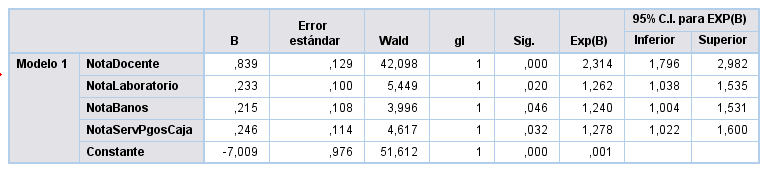

Capítulo 4 Análisis Multivariable
4.1 Regresión Logística
Con la finalidad de profundizar en los resultados obtenidos en la encuesta de servicio 2018-2, se ha formulado dos modelos. El primer modelo asume como variable dependiente la probabilidad de recomendar -o no- el instituto a algún familiar o amigo; por otro lado, el segundo modelo busca conocer cuáles son las variables significativas que hacen más probable (o improbable) la evaluación con nota 6 ó 7 el servicio entregado por el Instituto.
- Modelo Nº1: Probabilidad de recomendar el Instituto
La disposición a recomendar el Instituto representa, en su base, es una actitud condicionada por la experiencia que el estudiante ha tenido en su rol de tal en un ciclo determinado. Por ende, se hace necesario conocer cuáles, de las variables observadas, son factores que aumentan o reducen la probabilidad de que el evento ocurra: el evento aquí es el hecho de recomendar el Instituto.
Para responder al objetivo anterior, se ha hecho uso de la técnica estadística de regresión logística multivariable. En el cuadro siguiente se muestran algunos coeficientes que permiten aludir a la validez del modelo.
Resumen del Modelo Nº1
| Log.de la verosimilitud -2 | R2 de Cox y Snell | R2 de Negelkerke |
|---|---|---|
| 342,305 | 0,191 | 0,345 |
-2 log de la verosimilitud (-2LL) mide hasta qué punto un modelo se ajusta bien a los datos. El resultado de esta medición recibe también el nombre de “desviación”. El valor es moderado, lo ideal es que sea lo más bajo posible, por ello sólo se alude a un ajuste sólo aceptable.
La R cuadradro de Cox y Snell se utiliza para estimar la proporción de varianza de la variable dependiente explicada por las variables predictoras (independientes). La R cuadrado de Cox y Snell se basa en la comparación del log de la verosimilitud (LL) para el modelo respecto al log de la verosimilitud (LL) para un modelo de línea base. Sus valores oscilan entre 0 y 1. En nuestro caso es un valor moderado (0,191) que indica que sólo el 19% de la variación de la variable dependiente es explicada por las variables incluidas en el modelo.
La R cuadrado de Nagelkerke es una versión corregida de la R cuadrado de Cox y Snell. La R cuadrado de Cox y Snell tiene un valor máximo inferior a 1, incluso para un modelo “perfecto”. La R cuadrado de Nagelkerke corrige la escala del estadístico para cubrir el rango completo de 0 a 1. Aquí el valor alude a un modelo aceptable.
El siguiente cuadro muestra las variables significativas que son parte del modelo.

La información del cuadro anterior, permite esbozar lo siguiente:
Cada una de las variables contenidas en el cuadro han resultado ser significativas en términos estadístico, por ende, desempeñan un rol en relación a la ocurrencia del evento (recomendar).
Los valores de la columna b son positivos, lo que indica que cada una de las variables, al incrementarse en una unidad (en este caso de notas de 1 a 7), aumentan la probabilidad de ocurrencia del evento. Si el signo fuese negativo, indicaría que dicha variable desempeña un rol protector, o sea, evita que ocurra el evento (recomendar el IGS).
El valor de la columna Exp(b) indica cuál de las variables seleccionadas tiene un mayor poder para explicar el evento de recomendar. En este contexto, este rol lo posee la variable nota a los docentes puesto que el valor de Exp(b) es el que más se aleja de 1, llegando a 2,314.
Si bien, como deja en claro el punto anterior, la evaluación de los docentes resulta ser clave en el hecho de recomendar o no el Instituto, están las otras variables las cuales aluden a espacios físicos de uso cotidiano para los alumnos, especialmente el área de servicios higiénicos y laboratorios. A su vez, aparece la evaluación de servicios de pago o cajas.
- Modelo Nº2: Probabilidad de Evaluar Servicios con Nota 6 o 7
El Instituto define como satisfacción global las respuestas a la pregunta “evalúe la calidad de los servicios entregados por el Instituto”. En este aspecto, junto al modelo anterior, es necesario conocer cuál de las variables observadas resulta ser factor en cuanto a evaluar positiva o negativamente los servicios entregados por el Instituto, o en otras palabras, que ocurra el evento de calificar con nota 6 o 7 este tópico.
Al igual que en el modelo Nº1, se ha hecho uso de la técnica estadística de regresión logística multivariable. En el cuadro siguiente se muestran algunos coeficientes que permiten dar cuenta de la calidad estadística del modelo.
Resumen del Modelo Nº2
| Log.de la verosimilitud -2 | R2 de Cox y Snell | R2 de Negelkerke |
|---|---|---|
| 494,305 | 0,350 | 0,483 |
-2 log de la verosimilitud (-2LL). El valor de este coeficiente es moderado, lo ideal es que sea lo más bajo posible, por ello sólo se alude a una calidad del modelo aceptable.
La R cuadrado de Cox y Snell. Los valores de este coeficiente oscilan entre 0 y 1. En este caso el valor es moderado (0,350), lo que indica que el 35% de la variación de la variable dependiente es explicada por las variables incluidas en el modelo.
La R cuadrado de Nagelkerke. El valor de este coeficiente da cuenta de un modelo aceptable.
El siguiente cuadro muestra las variables significativas que son parte del modelo.

La información del cuadro anterior, permite esbozar lo siguiente:
Cada una de las variables contenidas en el cuadro desempeñan un rol estadístico en relación a la ocurrencia del evento (recomendar).
Los valores de la columna b son positivos, lo que indica que al aumentar cada una de las variables aumentan también la probabilidad de ocurrencia del evento (calificar con nota 6 y 7 el servicio entregado por el Instituto). Si el signo fuese negativo, indicaría que dicha variable desempeña un rol protector, o sea, evita que ocurra el evento.
El valor de la columna Exp(b) indica cuál de las variables seleccionadas tiene un mayor poder para explicar el evento de recomendar. En este contexto, al igual como ocurre en el modelo nº1, este rol lo posee la variable “NotaDocentes”, donde el valor de Exp(b) es el más alto, llegando a 2,190.
En este modelo, aparecen relevantes 3 variables relacionadas con el aspecto material-espacial del Instituto (Infraestructura, Biblioteca y Cafetería), una de espacio virtual (IEB-Virtual). Estas variables indican que a medida que aumenta en una unidad la calificación (de nota 1 a 7), aumenta la probabilidad que el estudiante evalúe con nota 6 ó 7 el servicio entregado por el Instituto. Una última variable se relaciona con el perfil del estudiante (técnico versus profesional); en este caso cuando el estudiante pasa de técnico a profesional aumenta la probabilidad de evaluar con nota 6 ó 7 al Instituto en cuanto al servicio que entrega.